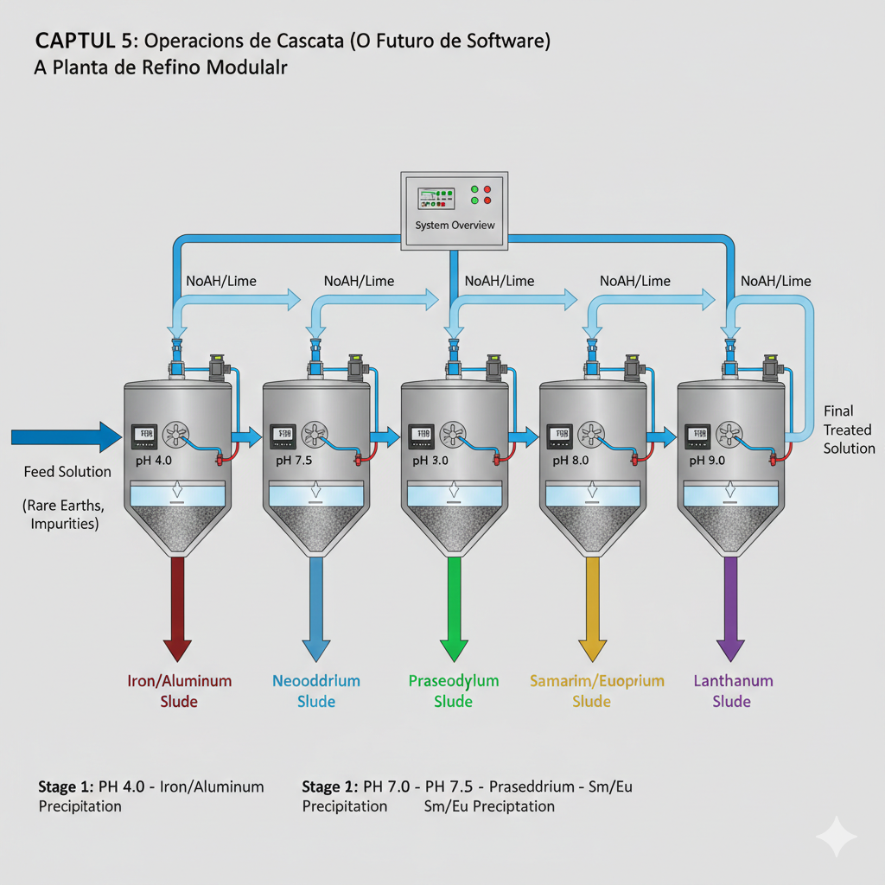

Curso Técnico: Fundamentos de Hidrometalurgia de Terras Raras
Introdução

Este curso apresenta os fundamentos termodinâmicos e cinéticos que unificam o tratamento de efluentes (Lodos Ativados) e o refino de terras raras (Hidrometalurgia). A abordagem segue o princÃpio "FÃsica antes da Lógica", estabelecendo que todo algoritmo computacional deve emergir de princÃpios fundamentais da termodinâmica e cinética quÃmica.
A motivação prática reside na crescente demanda por elementos de terras raras (LantanÃdeos) para aplicações em tecnologias verdes (Ãmãs permanentes, baterias, catalisadores) e a necessidade de processos de separação eficientes e ambientalmente sustentáveis.
CapÃtulo 1: Fundamentos da Termodinâmica de Soluções Aquosas

1.1 O Produto de Solubilidade (Kps) como Constante de EquilÃbrio
O produto de solubilidade, Kps, é uma constante termodinâmica que descreve o equilÃbrio entre um sólido pouco solúvel e seus Ãons em solução aquosa. Para um hidróxido genérico M(OH)n, a reação de dissolução é:
A constante de equilÃbrio é definida como:
onde [Mn+] e [OH-] são as concentrações molares dos Ãons em solução no equilÃbrio.
Para metais trivalentes (valência n=3), como os lantanÃdeos, a relação torna-se:
1.2 O pH como Variável de Controle da Energia Livre
O pH da solução controla diretamente a concentração de Ãons hidróxido através da relação:
ou, equivalentemente:
Substituindo na equação do Kps:
Esta equação estabelece que, para um dado Kps, a concentração residual do metal em solução diminui exponencialmente com o aumento do pH. A precipitação inicia quando o produto iônico (PI = [M3+] × [OH-]3) iguala o Kps.
1.3 Cálculo do pH de InÃcio de Precipitação
Para uma concentração inicial [M3+]0 do metal, o pH no qual a precipitação inicia pode ser calculado rearranjando a equação do Kps:
Aplicando logaritmo:
E, portanto:
Exemplo Prático:
Para NeodÃmio (Kps = 1.9 × 10-22) em concentração inicial de 0.01 mol/L:
Este valor indica que, em pH acima de 7.43, o NeodÃmio começará a precipitar como Nd(OH)3.
1.4 A Raiz Cúbica e a Estequiometria
A presença da raiz cúbica (1/3) na equação reflete a estequiometria da reação: para cada mol de metal trivalente que precipita, três mols de OH- são consumidos. Esta relação é fundamental para o cálculo estequiométrico de dosagem de reagentes (NaOH, Ca(OH)2) em processos industriais.
CapÃtulo 2: QuÃmica dos LantanÃdeos e a Contração LantanÃdica

2.1 A Configuração Eletrônica e a Similaridade QuÃmica
Os 15 lantanÃdeos (La até Lu) compartilham a configuração eletrônica [Xe]4fn5d0 ou [Xe]4fn5d1, onde n varia de 0 a 14. A camada 4f está internamente blindada pela camada 5s25p6, resultando em propriedades quÃmicas muito similares.
2.2 A Contração LantanÃdica
Apesar da similaridade quÃmica, existe uma tendência sistemática: o raio iônico dos lantanÃdeos diminui gradualmente do Lantânio (La, r = 103.2 pm) ao Lutécio (Lu, r = 86.1 pm). Este fenômeno, conhecido como "contração lantanÃdica", resulta do aumento da carga nuclear efetiva à medida que os elétrons 4f são adicionados.
| Elemento | Kps | pH de Precipitação (0.01 mol/L) |
|---|---|---|
| Lantânio (La) | 1.0 × 10-19 | ≈ 8.3 |
| NeodÃmio (Nd) | 1.9 × 10-22 | ≈ 7.4 |
| Lutécio (Lu) | 2.5 × 10-24 | ≈ 6.8 |
2.3 O Caso Especial do Ãtrio (Y)
O Ãtrio, embora não seja um lantanÃdeo propriamente dito, apresenta comportamento quÃmico similar devido ao seu raio iônico (r = 90.0 pm) comparável aos lantanÃdeos médios. Na prática industrial, o Ãtrio é frequentemente agrupado com as terras raras pesadas.
2.4 Aplicação em Separação Seletiva
A contração lantanÃdica permite a separação seletiva através de ajuste fino do pH. Por exemplo, para separar NeodÃmio de PraseodÃmio:
- NeodÃmio (Nd): Kps = 1.9 × 10-22
- PraseodÃmio (Pr): Kps = 3.0 × 10-22
A diferença de Kps cria uma "janela de pH" onde o NeodÃmio precipita preferencialmente, permitindo recuperação com pureza superior a 85%.
CapÃtulo 3: Hidrometalurgia vs. Lodos Ativados

3.1 Analogia Conceitual: Decantador de ETE e Tanque de Precipitação
Embora os processos de tratamento de efluentes (ETE) e refino de metais pareçam distintos, compartilham fundamentos termodinâmicos comuns:
| Aspecto | Tratamento de Efluentes | Refino de Terras Raras |
|---|---|---|
| Objetivo | Remover matéria orgânica (DBO) | Separar metais por precipitação |
| Fase Sólida | Biomassa bacteriana (lodo ativado) | Hidróxidos metálicos (lodo industrial) |
| Fase LÃquida | Efluente tratado | Solução rica em metais não precipitados |
| Variável de Controle | Concentração de oxigênio (So) | pH da solução |
3.2 Balanço de Massa (Lavoisier) em Sistemas Multifásicos
A Lei de Conservação de Massa, estabelecida por Lavoisier, aplica-se rigorosamente a ambos os sistemas:
Para um tanque de precipitação operando em regime estacionário:
onde:
- Mentrada: Massa total de metal na alimentação
- Mlodo: Massa de metal no sólido precipitado
- Msolução: Massa de metal residual em solução
3.3 A Matriz de Petersen como Ferramenta Unificadora
A Matriz de Petersen, originalmente desenvolvida para modelagem de lodos ativados (ASM1 simplificado), pode ser adaptada para processos hidrometalúrgicos:
| Componente (Colunas) | Lodos Ativados | Hidrometalurgia |
|---|---|---|
| Ss | Substrato (matéria orgânica) | [M3+]: Concentração de metal |
| Xb | Biomassa | Xp: Massa de precipitado |
| So | Oxigênio dissolvido | [OH-]: Concentração de hidróxido |
Esta analogia permite a aplicação de ferramentas computacionais desenvolvidas para ETE em problemas de hidrometalurgia.
CapÃtulo 4: Engenharia de Separação e Seletividade

4.1 O Conceito de Janela de Separação
A "janela de separação" é definida como a faixa de pH onde um metal alvo precipita preferencialmente em relação a um contaminante. Matematicamente:
Para separação viável, ΔpH > 0.5 unidades.
Exemplo: Separação de NeodÃmio de Ferro
- Ferro (Fe3+): Kps = 4.0 × 10-38, precipita em pH ≈ 3.2
- NeodÃmio (Nd3+): Kps = 1.9 × 10-22, precipita em pH ≈ 7.4
A janela de separação é ΔpH = 7.4 - 3.2 = 4.2 unidades, indicando separação altamente viável. Em pH = 7.4, o Ferro já precipitou completamente, enquanto o NeodÃmio inicia sua precipitação.
4.2 Fração de Precipitação e Eficiência
A fração de precipitação, η, de um metal em um dado pH é:
Substituindo a concentração residual pela equação do Kps:
4.3 Cálculo de Pureza do Precipitado
A pureza, P, do lodo é definida como:
onde Malvo e Mcontaminantes são as massas do metal desejado e dos contaminantes no sólido, respectivamente.
4.4 Exemplo Prático: Reciclagem de Ãmãs de NeodÃmio
Ãmãs permanentes de NeodÃmio-Ferro-Boro (NdFeB) contêm aproximadamente 30% de NeodÃmio em massa. No processo de reciclagem:
- Dissolução Ãcida: Os Ãmãs são dissolvidos em ácido, gerando solução com:
- Nd3+: ~0.5 mol/L
- Fe2+/Fe3+: ~1.2 mol/L
- Boro: presente como ácido bórico
- Precipitação Seletiva: Ajuste de pH para 7.5-8.0:
- Fe3+ precipita completamente (pH < 4)
- Nd3+ precipita com eficiência >95%
- Pureza do lodo: 85-90% (devido a arraste de Fe2+)
- Refino Adicional: Múltiplos estágios de precipitação-redissolução para atingir pureza >99%.
CapÃtulo 5: Operações em Cascata (O Futuro do Software)
5.1 Fundamentos de Sistemas em Cascata
Uma cascata de precipitação consiste em múltiplos tanques em série, onde:
- O efluente de cada estágio é a alimentação do próximo
- O pH é ajustado independentemente em cada estágio
- Metais precipitados em estágios anteriores não "reaparecem" (lógica de cascata)
Para o estágio i:
5.2 Otimização de Reagentes
O consumo total de reagente (NaOH ou Ca(OH)2) em uma cascata de n estágios é:
onde:
- MOH-,neutralização,i: Moles de OH- para ajuste de pH no estágio i
- MOH-,precipitação,i: Moles de OH- consumidas pela precipitação no estágio i
Para metais trivalentes: MOH-,precipitação,i = 3 × Mmetal,precipitado,i
5.3 Minimização de ResÃduos (Lodos Industriais)
Lodos de precipitação de terras raras são classificados como resÃduos perigosos (Classe I) quando contêm metais pesados. A minimização de resÃduos envolve:
- Maximização de Recuperação: Reduzir perdas de metal no efluente final
- Concentração de Lodo: Reduzir volume através de espessamento e filtração
- Reutilização de Reagentes: Quando possÃvel, regenerar NaOH ou Ca(OH)2 do lodo
5.4 Exemplo: Cascata de 3 Estágios para Separação Nd/Pr
Configuração:
- Estágio 1: pH = 7.0 → Precipita Fe3+ e Al3+ (impurezas)
- Estágio 2: pH = 7.5 → Precipita Nd3+ com pureza ~88%
- Estágio 3: pH = 8.5 → Precipita Pr3+ residual
Resultados Esperados:
- Pureza final de Nd: >95%
- Eficiência de recuperação: >98%
- Consumo de NaOH: ~0.15 kg por kg de Nd recuperado
5.5 Desafios Computacionais
A simulação de cascatas requer:
- Solução Iterativa: Balanços de massa acoplados entre estágios
- Validação Termodinâmica: Garantir que concentrações residuais respeitem Kps
- Otimização Multiobjetivo: Pureza vs. Custo vs. Eficiência
Conclusão
A transição conceitual de Lodos Ativados para Refino de Terras Raras revela a unidade fundamental da Engenharia QuÃmica: processos aparentemente distintos compartilham princÃpios termodinâmicos e cinéticos comuns. O desenvolvimento de software de simulação deve sempre partir da "FÃsica antes da Lógica", garantindo que algoritmos numéricos sejam fundamentados em leis fÃsicas válidas.
A crescente demanda por terras raras, aliada à necessidade de processos sustentáveis, torna essencial o domÃnio destes fundamentos para engenheiros quÃmicos do século XXI.
Bibliografia
- Sillén, L. G.; Martell, A. E. Stability Constants of Metal-Ion Complexes. The Chemical Society, London, 1964.
- Cotton, S. Lanthanide and Actinide Chemistry. John Wiley & Sons, 2006.
- Henze, M.; Gujer, W.; Mino, T.; van Loosdrecht, M. Activated Sludge Models ASM1, ASM2, ASM2d and ASM3. IWA Publishing, 2000.
- Binnemans, K.; Jones, P. T.; Blanpain, B.; Van Gerven, T.; Yang, Y.; Walton, A.; Buchert, M. "Recycling of rare earths: a critical review." Journal of Cleaner Production, 2013, 51, 1-22.
- Jordens, A.; Cheng, Y. P.; Waters, K. E. "A review of the beneficiation of rare earth element bearing minerals." Minerals Engineering, 2013, 41, 97-114.
- Atkins, P.; de Paula, J. Physical Chemistry. 10th ed., Oxford University Press, 2014.
- Levenspiel, O. Chemical Reaction Engineering. 3rd ed., John Wiley & Sons, 1999.